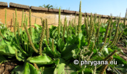

H.Ohba, 1977")
| Phrygana: la Nature en Crète principalement, mais aussi d'ailleurs ... |
|  |
|
|
| Plantago major subsp. intermedia | Parietaria cretica | Hylotelephium telephium |
| Espèces: 117§ --- Faune: 482 -- Flora: 67" -- Galles (Bacteria): 2 -- Champignons: 18 -- Lichens: 1 | |||||
| Nouveautés | |||||
| Fauna: | Pieris napi | Flora: | Combretum indicum | Fauna: | Dorcus parallelipipedus |
| Flora: | Arundo donax | Flora: | Phyllanthus acidus | Flora: | Washingtonia robusta |
| Flora: | Maclura pomifera | Flora: | Ruellia prostrata | Fungi: | Melampsora pulcherrima |
| 04 mars 2021 |